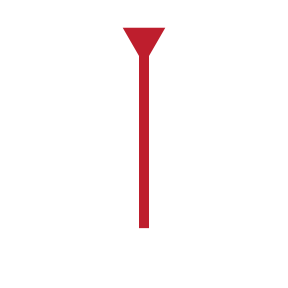

<div>
<script src="./seekback.js"></script>
<div id="seekbar">   
  <div id="sectionStart" class="ui-draggable ui-draggable-handle handlebar">
    
  </div>
  
  <div id="indicator" class="ui-draggable ui-draggable-handle">
    
  </div>

  <div id="sections">
    <div id="section1" class="section"></div>
    <div id="section2" class="section"></div>
    <div id="section3" class="section"></div>
  </div>


  <div id="sectionEnd" class="ui-draggable ui-draggable-handle handlebar">
    
  </div>
</div>

<!--The toolbar controlling playback controls-->
<div class="btn-group" id="toolbar">
  <button type="button" class="btn btn-primary tool-icon" id="playPause" style="background-image:url('images/play.svg')" data-toggle="tooltip" data-placement="bottom" title="Play"/>
  <button type="button" class="btn btn-primary tool-icon" style="background-image:url('images/previous.svg')" data-toggle="tooltip" data-placement="bottom" title="Back to beginning of Selection"/>
  <button type="button" class="btn btn-primary tool-icon" id="loop" style="background-image:url('images/loop.svg')" data-toggle="tooltip" data-placement="bottom" title="Loop Selection"/>
  <button type="button" class="btn btn-primary tool-icon" id="left" style="background-image:url('images/left.svg')" data-toggle="tooltip" data-placement="bottom" title="Decrease Speed"/>

  <!-- TODO(AP) make speed look more like a text box in the toolbar like in our prototype-->
  <!--The speed controller-->
  <form>
    <div class="form-group form-inline">
      <label for="speed" id="speedLabel">Speed</label>
      <input class="form-control" id="speed" autocomplete="off" placeholder="1.0"/>
    </div>
  </form>
  <button type="button" class="btn btn-primary tool-icon" id="right" style="background-image:url('images/right.svg')"/>
  <label id="countoffLabel">Countoff:</label>
  <div id="countoff">&#160;15s</div>
  <input id="countoffBar" type="range" min="0" max="30" step="1"></input>

  <button type="button" class="btn btn-primary tool-icon" id="metronome" style="background-image:url('images/metronome.svg')" data-toggle="tooltip" data-placement="bottom" title="Toggle Metronome"/>

  <!-- TODO(AP) make not a button, but still look nice -->
  <button type="button" class="btn btn-primary tool-icon" id="volume" style="background-image:url('images/volume.svg'); margin-left:auto" data-toggle="tooltip" data-placement="bottom" title="Volume">	</button>

  <input id ="volumeBar" type="range" min="0" max="100" step="1" style="margin-right:auto;"></input>
  <button type="button" class="btn btn-primary tool-icon" id="fullscreen" style="background-image:url('images/fullscreen.svg'); margin-left:auto;" data-toggle="tooltip" data-placement="bottom" title="Fullscreen"/>
</div>
</div>
